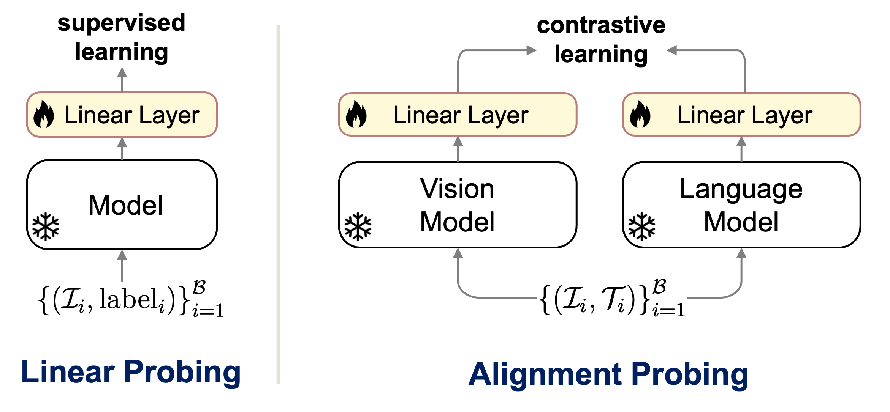
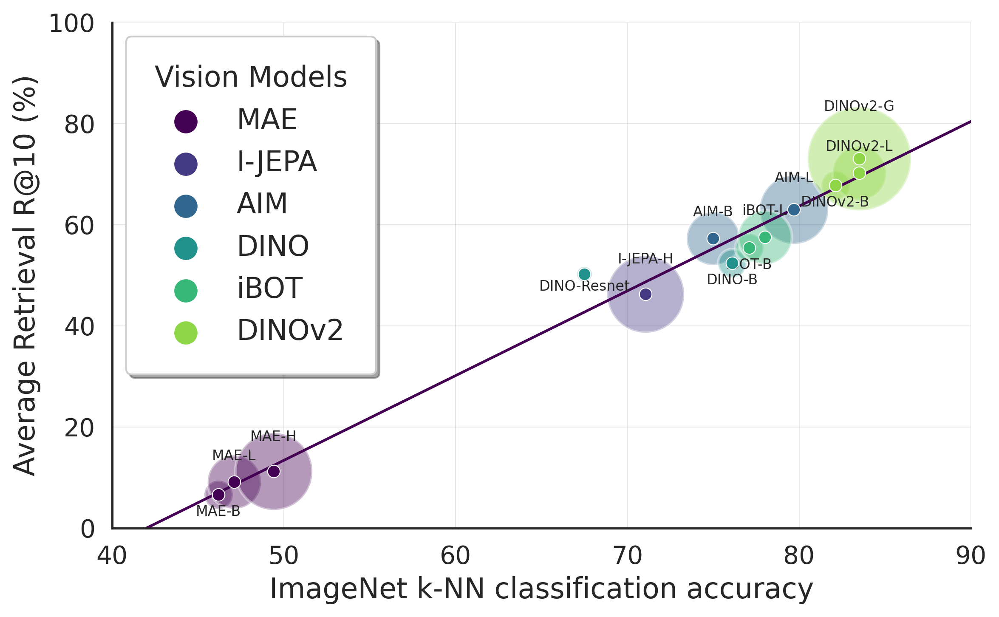
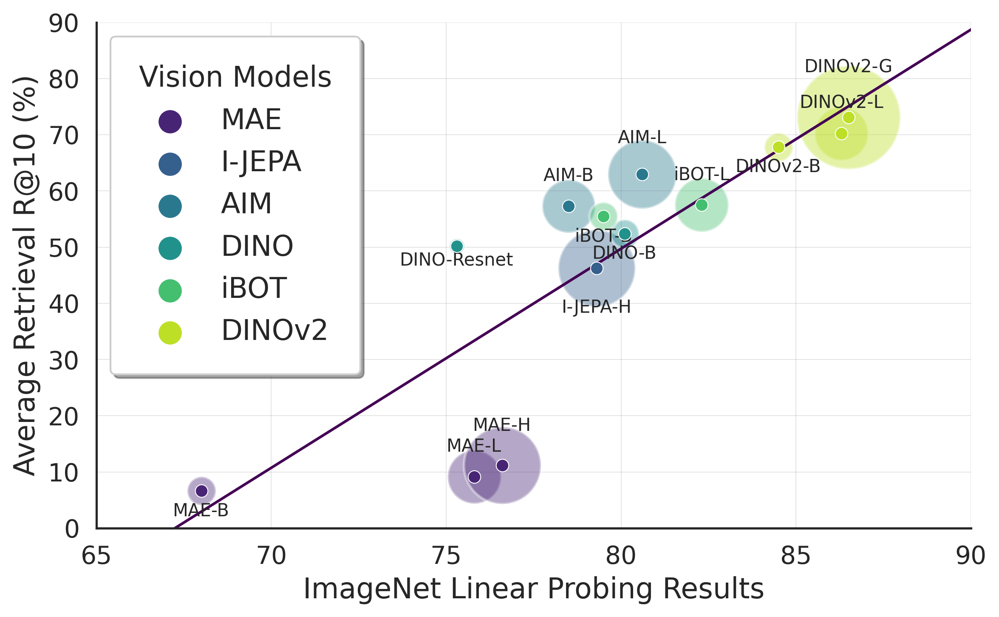
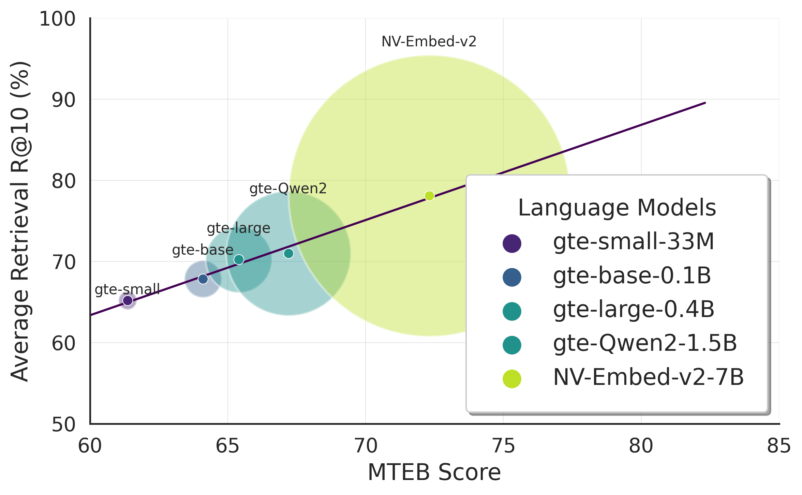
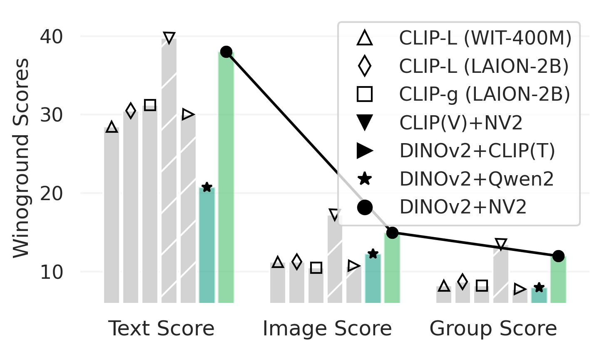
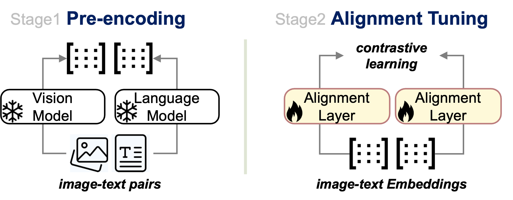
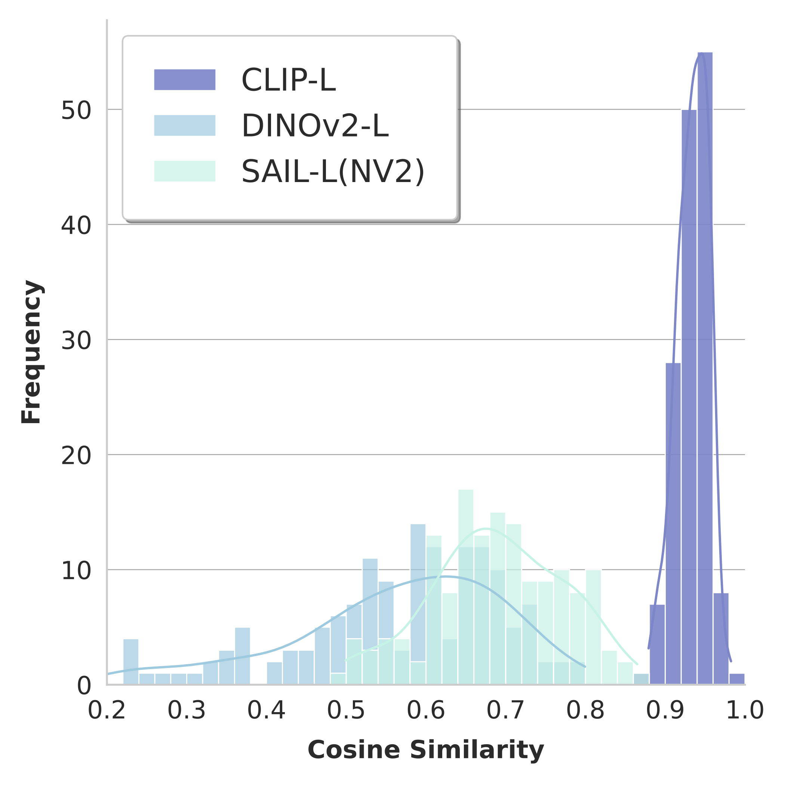
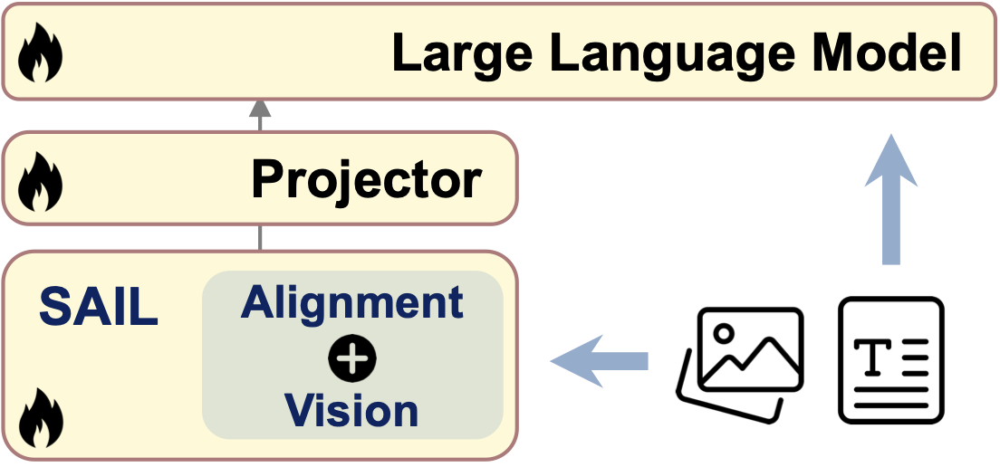

How well are unimodal vision and language models aligned?This question is critical for advancing multimodal AI. Although prior work has approached this problem, their methodologies often do not translate effectively to practical applications. To address this, we propose adirect assessment method, inspired by linear probing, for evaluating vision-language alignment.
Learning Alignment
How to efficiently learn alignment between unimodal models?We introduce Swift Alignment of Image and Language (SAIL), an efficient transfer learning framework that aligns pretrained unimodal vision and language models for downstream tasks.
By leveraging only ~6% of the paired image-text data required by CLIP,SAILachieves multimodal alignment using a single A100 GPU with just ~5 hours of training.
It supports batch sizes up to 32,768 and delivers outstanding performance, including 73.4% zero-shot accuracy on ImageNet (surpassing CLIP's 72.7%) while excelling in zero-shot retrieval, complex reasoning, and semantic segmentation. It also enahnces SSL vision encoders such as DINOv2 when integrated in multimodal large language models.
Part 1: Assessing Alignment between Unimodal Models
Overview
Key Questions
Alignment Capability:How well can unimodal visual and language models align for zero-shot open-vocabulary tasks?
Model Architecture Impact:Do larger models trained on extensive datasets yield better alignment, or does the choice of self-supervised learning (SSL) methods play a more significant role?
Representation Properties:What properties of SSL representations—such as linear separability or clustering quality—drive stronger cross-modal alignment?
We propose Visual-Language Alignment Probing, a direct assessment method inspired by linear probing in SSL evaluation. This approach freezes pretrained vision and language backbones and trains a lightweight linear alignment layer on image-text datasets.

Figure: Illustration of Visual-Language Alignment Probing
Results and Findings
We use the open-source DreamLIP CC3M dataset (2.2M paired image-text samples) to train the alignment layer, leveraging its diversity and quality as an effective probing dataset. To measure the alignment quality, we test on COCO in zero-shot retrieval setup, using the R@10 metric. We report average recall of text-to-image and image-to-text retrieval tasks. For systematic evaluation, we fix an anchor model in one modality and vary models in the other modality to identify which models best align with the anchor.
For the language anchor, we select GTE-en-large-v1.5, and broadly evaluate various self-supervised vision models.


Figure: Linear alignment probing results trained with 2.2M paired data from CC3M. The radius represents the relative number of parameters in each model. The Y-axis indicates the zero-shot MSCOCO retrieval average R@10 performance.
Key Findings
Model Size Impact: Larger models always lead to better alignment.
SSL Method Matters: DINOv2 demonstrates superior alignment with language anchors, outperforming larger models like AIM-L (1B parameters) despite its smaller size (86M parameters), while DINO-ResNet matches DINO-B's performance with fewer parameters, highlighting ResNet's efficiency. In contrast, MAE-series models underperform, likely due to their pixel-level reconstruction focus, which emphasizes low-level details over the high-level semantics essential for image-text alignment.
Representation Properties: Alignment performance strongly depends on the clustering quality of SSL representation, as reflected by k-NN performance more than linear separability.
For the vision anchor, we select DINOv2-L, and broadly evaluate various language models.


Figure: Linear alignment probing results trained with 2.2M paired data from CC3M. The radius represents the relative number of parameters in each model. The Y-axis indicates the zero-shot MSCOCO retrieval average R@10 performance.
Key Findings
Model Size Impact: Larger language models (as measured by MTEB benchmark) consistently achieve better alignment with the vision anchor, highlighting the importance of model scale.
Language Understanding Critical: Strong language understanding capabilities are essential for complex vision-language reasoning tasks.
CLIP Training Limitations: Training text encoders solely through CLIP-style contrastive learning proves insufficient for optimal performance.
Pretrained LM Advantage: Leveraging pretrained language models as text encoders emerges as a promising strategy for building robust vision-language models, as they bring rich linguistic knowledge.
Part 2: Learning Alignment between Unimodal Models
Swift Alignment of Image and Language Framework
We introduce Swift Alignment of Image and Language (SAIL), a streamlined framework for aligning pretrained vision and language models. Our efficient two-step training pipeline optimizes both performance and computational costs. Specifically, SAIL achieves superior alignment through three key optimizations:

SAIL achieves superior alignment through three key optimizations:
Alignment Layer Arch
Advanced non-linear GLU in alignment layers to improve alignment quality
Enhanced Loss Function
Sigmoid binary classification loss with balanced positive/negative contributions
High-Quality Data Selection
MLLM generated captions as additional positives and multiple positive captions contrast loss
Ablation
0
1
2
3
4
5
6
7
Tasks
Baseline
+ MLP × 4
+ GLU × 4
+ GLU × 8
+ Sigmoid
+ |B| → |B|²
+ Long-HQ
+ Multi-Pos
IN-1K 0-shot
33.2
36.8
39.6
45.4
50.7
51.8
48.4
54.0
T2I R@1
11.1
8.0
11.5
16.1
25.4
26.2
31.4
32.9
I2T R@1
13.5
10.7
17.4
22.5
36.0
36.7
44.2
45.4
Table: Ablation results using CC3M on different methods.
Baseline refers to aligning unimodal models with only a linear layer using infoNCE loss.
Evaluating SAIL on Downstream Tasks.
We train SAIL using state-of-the-art DINOv2-L as the vision model, paired with two language models: compact GTE-en-large-v1.5 (SAIL-L-GTE) and powerful NV-Embed-2 (SAIL-L-NV2) on a 23M Merged dataset with ShareGPT4-generated captions as additional positive captions. The training of SAIL takes ~ 5 hours on a single A100 GPU with batch size up to 32,768.
SAIL excels in various zero-shot cross-modal tasks, including image recognition, cross-modal retrieval, open-vocabulary segmentation, and MLLM tasks.
SAIL achieves superior performance in image recognition tasks. Trained on only 6% of image-text pairs, SAIL outperforms CLIP-L on most datasets. Notably, SAIL-L (GTE) achieves 73.4% accuracy on ImageNet-1k, surpassing the performance of CLIP-L.
Data
Model
Food101
CIFAR10
CIFAR100
SUN397
Cars
Aircraft
DTD
Pets
Cal101
Flowers
Avg.
IN-1K
CC12M
SAIL-L (GTE)
71.2
96.3
83.8
67.2
33.0
8.0
53.0
66.5
82.6
57.7
61.9
63.9
23M Merged
SAIL-L (GTE)
76.1
97.3
84.6
68.6
32.0
16.0
52.5
56.9
83.0
68.3
63.5
65.4
CC12M
SAIL-L (NV2)
81.9
96.1
85.2
68.3
42.9
16.3
60.4
84.7
82.4
67.5
68.6
72.1
23M Merged
SAIL-L (NV2)
86.1
96.7
86.7
69.8
44.6
28.6
63.5
82.3
85.4
77.2
72.1
73.4
LAION400M
CLIP-L
90.1
94.6
77.4
72.6
89.6
25.0
60.4
91.7
82.1
75.5
75.9
72.7
Table: Zero-shot classification top 1 accuracy (%) on various datasets.
indicate performance better than CLIP baseline, while
represent the highest scores across all models.
SAIL consistently outperforms CLIP-L on all retrieval-based tasks. Especially on complex reasoning tasks, SAIL achieves significant improvements over CLIP-L. This again highlights the importance of the advanced language representation in performing vision-language tasks.
Data
Model
MSCOCO
Flickr30k
Winoground
MMVP
I2T
T2I
I2T
T2I
T.
I.
G.
Avg.
Model Architecture: ViT-L/14
CC12M
SAIL-L (GTE)
50.4
39.3
78.4
66.6
33.25
13.0
9.25
17.0
23M Merged
SAIL-L (GTE)
54.1
42.7
80.8
68.9
34.0
13.25
8.75
22.2
CC12M
SAIL-L (NV2)
57.3
45.3
84.9
73.0
37.75
18.25
13.2
28.0
23M Merged
SAIL-L (NV2)
62.4
48.6
87.6
75.7
40.25
18.75
15.0
28.9
LAION400M
CLIP-L
59.7
43.0
87.6
70.2
30.5
11.5
8.75
20.0
Table: Results on
standard retrieval,
complex reasoning and
visual-centric tasks.
We report Recall@1 for MSCOCO and Flickr30k; Text, Image and Group scores for Winoground; and the average score for MMVP.
We analyzed image-image cosine similarity for 150 MMVP image pairs to evaluate fine-grained visual discrimination including subtle differences in orientation, perspective, quantity, color, and contextual details. While CLIP tends to assign high similarity scores even between images with varying conditions, DINOv2 better captures subtle visual differences. Our analysis shows that SAIL's cosine similarity distribution aligns closely with DINOv2's, demonstrating that SAIL inherits DINOv2's strong capability for fine-grained visual discrimination.

Figure: Distribution of cosine similarities between MMVP image pairs for different vision encoders.
An image is represented as a sequence of tokens $X = [x_{cls}, X_{patch}]$, where $X_{patch} \in \mathbb{R}^{hw \times d}$.
We compute cosine similarity between each patch and a sentence embedding $y_{text}$ (e.g., "a photo of a {label}")
to produce segmentation masks: $\mathcal{M} = \arg \max \cos(X_{patch}, y_{text})$.
Data
Model (ViT-L/14)
ADE20K
Stuff
VOC20
LAION400M
CLIP ‡
1.2
2.4
15.8
LAION400M
MaskCLIP ‡
6.9
8.9
30.1
LAION400M
SCLIP ‡
7.1
13.1
60.3
23M Merged
SAIL (GTE)
13.5
14.1
65.2
23M Merged
SAIL (NV2)
14.2
14.7
66.1
Table: Open-vocabulary semantic segmentation mIOU results compared with CLIP-based methods.
All models use ViT-L/14 as the vision architecture. ‡ Cited results.
We demonstrate that the alignment training using SAIL framework can transform features from SSL models like DINOv2 to be more language-compatible, thus better suited for integration with MLLMs for tackling complex vision-language tasks. We train LLaVA-1.5 with various vision encoders and evaluate across downstream tasks.

Model@224px
VTune
SEEDIMG
GQA
VizWiz
PoPE
TextVQA
MMB
VQAv2
0 DINOv2-L
✗
61.47
61.08
44.12
85.5
45.37
56.96
74.4
1 DINOv2-L
✓
62.12
61.53
46.59
85.7
45.92
58.85
74.69
2 SAIL-L
✓
65.43
62.63
50.00
86.16
46.53
60.14
76.77
3 CLIP-L/14*
✗
64.05
61.58
48.87
85.74
54.56
63.06
75.32
4 CLIP-L/14*
✓
64.15
61.54
49.93
85.73
54.18
64.12
76.36
Table: LLaVA-1.5 with various vision models. *Reproduced using OpenAI CLIP-L@224. VTune indicates if the vision encoder is fine-tuned during the instruction tuning stage.
SAIL-L (row 2) significantly enhances DINOv2's capabilities through alignment training on 23M image-text pairs. Despite CLIP being trained on 400M pairs, SAIL transforms DINOv2 from trailing CLIP to outperforming it on 5 out of 7 tasks (rows 1-4). This improvement holds even when compared to a CLIP model fine-tuned during instruction-tuning (row 4), demonstrating SAIL's effectiveness in learning language-aligned visual features that integrate seamlessly with LLMs. While SAIL shows lower performance on TextVQA and MMB tasks requiring OCR capabilities, this limitation stems from DINOv2's inherent architecture, as evidenced by consistently lower OCR performance in DINOv2 baselines (rows 0-1) compared to CLIP variants.